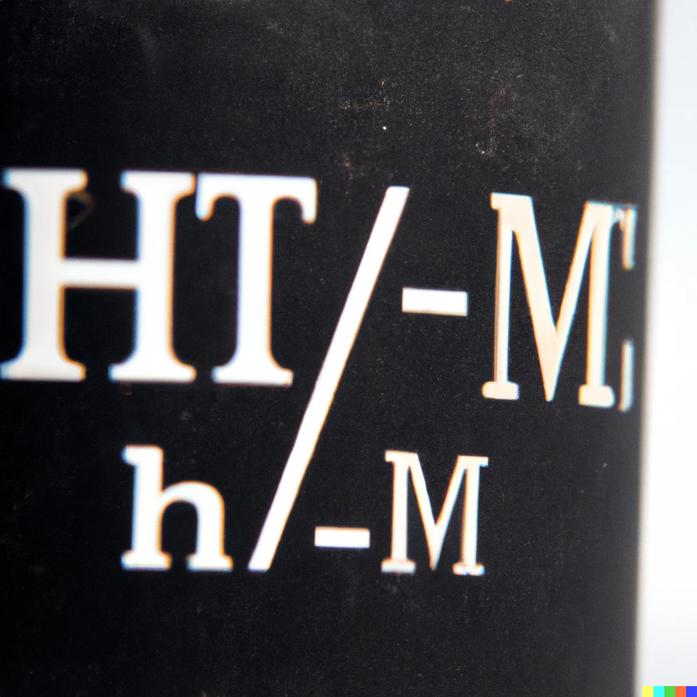

Quién soy
Hola, soy Yoel Santiago Pantoja Estrada y nací en Cali, Valle del Cauca en el año 2003. Actualmente tengo 19 años y estoy estudiando una tecnología en la Universidad del Valle, enfocándome en la programación backend utilizando tecnologías como Spring Boot, SQL y JavaScript.
Desde que era joven, siempre he sido muy interesado en la programación y la música. Mi pasión por la programación comenzó cuando comencé a aprender HTML y CSS por mi cuenta, y desde entonces he adquirido habilidades en diferentes lenguajes de programación, incluyendo JavaScript, SQL y Spring Boot.
Durante mi tiempo en la universidad, he sido un estudiante dedicado y comprometido, obteniendo buenos resultados académicos y participando en diferentes proyectos y actividades. He tenido la oportunidad de trabajar en proyectos de desarrollo web utilizando tecnologías como Spring Boot, HTML, CSS y JavaScript, lo que me ha permitido adquirir experiencia práctica en el mundo real.
A pesar de mi corta edad, ya he logrado algunos hitos importantes en mi carrera, como el desarrollo de aplicaciones web y microservices para proyectos y trabajos personales.
En resumen, soy un joven apasionado y dedicado a la programación y la música, que está trabajando arduamente para convertirse en un programador backend altamente capacitado y exitoso
Las tecnologías backend y Angular para este año
Como desarrollador, siempre he sido apasionado por las tecnologías backend y su capacidad para proporcionar soluciones escalables y seguras para una amplia gama de aplicaciones. Sin embargo, también he reconocido la importancia de las tecnologías frontend y la necesidad de un enfoque equilibrado en ambas áreas.
Este año, mi objetivo es expandir mis habilidades en el desarrollo frontend, particularmente en Angular. Angular es un marco de desarrollo de aplicaciones web que permite la creación de aplicaciones SPA (Single Page Application) altamente interactivas y escalables. A medida que el uso de aplicaciones web continúa creciendo, Angular se ha convertido en una de las herramientas más populares para desarrollar aplicaciones web modernas.
Sin embargo, también entiendo la importancia de las tecnologías backend para el desarrollo de aplicaciones web. Las tecnologías backend, como Node.js, Spring Boot y Django, son cruciales para proporcionar una base sólida y segura para el desarrollo de aplicaciones web. Estas tecnologías son responsables de manejar las solicitudes de los usuarios, almacenar y recuperar datos y gestionar la seguridad y la privacidad de los datos de los usuarios.
A medida que mi enfoque se expande hacia el desarrollo frontend, también estoy trabajando en mejorar mis habilidades en las tecnologías backend. Mi objetivo es crear una base sólida de conocimiento en ambas áreas, para poder diseñar y desarrollar aplicaciones web de manera más efectiva y eficiente.
En resumen, como desarrollador, creo firmemente en la importancia de un enfoque equilibrado en el desarrollo de aplicaciones web. Este año, mi enfoque se centrará en mejorar mis habilidades en Angular mientras continúo expandiendo mis conocimientos en las tecnologías backend. Al hacerlo, espero poder proporcionar soluciones web más eficientes y efectivas para una amplia gama de aplicaciones.

En resumen, como desarrollador de backend, estoy comprometido en crear soluciones eficientes y escalables que garanticen la seguridad y la calidad de las aplicaciones. Me apasiona mi trabajo y estoy emocionado de continuar aprendiendo y creciendo en este campo en constante evolución.
Mi enfoque para aprender un framework de frontend, es importante entender los conceptos fundamentales de HTML, CSS y JavaScript, así como la arquitectura del lado del cliente y el funcionamiento de las solicitudes HTTP.
Para mí, la música es una forma de arte que tiene el poder de evocar emociones y crear un ambiente único. Me encanta escuchar y tocar música como una forma de relajación y para motivarme mientras estudio o trabajo en mis proyectos.